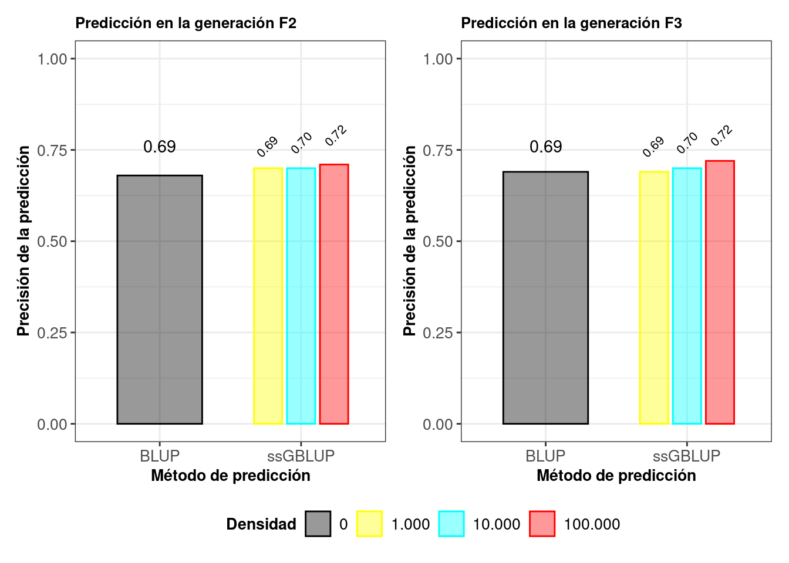

Precisión de la predición mediante simulación con SeqBreed
Hoy en día, los métodos de predicción genómica se usan ampliamente en la mejora genética de plantas y de animales. Antes de que estos métodos sean implementados en escenarios prácticos, es importante conocer su precisión al predecir el valor de cría estimado (EBV, o GEBV al realizar la predicción utilizando SNP). En este sentido, uno de los objetivos de mi trabajo de grado consistió en estudiar el efecto del número de marcadores (SNP) sobre la precisión del GEBV para el carácter tiempo de floración en el arroz. Para ello, se realizó un estudio de simulación a partir del uso del módulo SeqBreed (Pérez-Enciso, Ramírez-Ayala, and Zingaretti 2020) del lenguaje de programación Python(Van-Rossum and Drake 1995).
Cada uno de los pasos llevados a cabo en dicho estudio de simulación los describiré a continuación (Figure 1).

1. Uso de genotipos de la población fundadora
Para simular los datos de fenotipo y de genotipo se usaron los datos con los 100.231 SNP resultantes del control de calidad y que puede descargar en el capítulo donde se describen los datos. Luego, usando las funciones gg.GFounder() y gg.Genome(), como se puede observar en el código a continuación, se obtuvo un archivo que indicó el número de individuos genotipados o individuos de la población fundadora (451), la ploidía (2) y el número de SNP (100.231).
SNP_pos = 'SNP_pos'
Gen_Pob_base = gg.GFounder(vcfFile = vcf_IND, snpFile = SNP_pos)Con el argumento vcfFile de la función gg.GFounder(), se carga los genotipos de la llamada población fundadora en formato variant call. Con esta función se obtiene la posición de cada uno de los SNP, y esta a su vez se almacena en el objeto SNP_pos previamente definido.
Gen_caracteristicas = gg.Genome(snpFile = SNPs_pos, mapFile = None, ploidy = Gen_Pob_base.ploidy, XChr = 'X', YChr = 'Y', MTChr = 'MT')Con la función gg.Genome() se genera un objeto de clase Genome con algunas de las características del genoma de la población fundadora, como son el nombre y el número de cromosomas. Con el argumento snpFile se especifica el objeto SNP_pos generado en el paso anterior, además de que si se dispone del nombre de los cromosomas sexuales y mitocondrial, estos se especifican en los argumentos XChr, YChr y MT. Aquí, no se dispuso de un archivo con información acerca de recombinación genética y mapeo de genes, por lo cual en el argumento mapFile se colocó “None”.
2. Especificación de la arquitectura genética (SNP causales (QTN) y sus efectos)
Se llevo a cabo inicialmente un estudio de asociación a nivel genómico (GWAS) usando el software GCTA(Yang et al. 2011), para identificar las regiones genómicas asociadas con el carácter tiempo de floración. A continuación podrá descargar el archivo que resultó al hacer el GWAS, donde se específica el efecto de los QTN y su localización.
Posteriomente, con base en el GWAS (Figure 2), se seleccionaron 50 QTN cuyo efecto era proporcional a la varianza aditiva explicada.

A continuación podrá descargar los 50 QTN seleccionados.
Por último, se usó la función gg.QTNs() sobre estos datos generados, indicando también la heredabilidad del carácter (0.7) de acuerdo a resultados previamente reportados (Vourlaki et al. s.f.).
QTN = 'QTN.txt'
QTNs = gg.QTNs(h2 = [0.7], genome = Gen_caracteristicas, qtnFile = QTN)Con la función gg.QTNs() se determina la arquitectura genética para el carácter simulado. Para ello, se especifica un valor deseado de heredabilidad con el argumento h2, se carga el archivo QTN.txt que indica el efecto y la localización de cada uno de los QTN seleccionados anteriormente con el argumento qtnFile, y con el argumento genome se accede a las características del genoma previamente almacenado.
3. Generación de pedigríes
Inicialmente, se generaron cuatro pedigríes, cada uno de ellos con esquemas de cruzamiento diferentes partiendo de la población fundadora con 451 individuos.
| Pedigrí 1 | Pedigri 2 | Pedigrí 3 | Pedigrí 4 | |
|---|---|---|---|---|
| F0 | 451 | 451 | 451 | 451 |
| F1 | 101 | 20 | 40 | 80 |
| F2 | 800 (10x80)2 | 800 (20x40) | 800 (40x20) | 800 (80x10) |
| F3 | 800 (800x1)3 | 800 (800x1) | 800 (800x1) | 800 (800x1) |
| Total | 2.061 | 2.071 | 2.091 | 2.131 |
| 1 10 indica el número de descendientes que tendrían los 451 individuos de la generación F0 mediante cruzamiento. | ||||
| 2 10x80 indica el número de descendientes (80) que tendrían cada uno de los 10 individuos de la generación F1 por autofecundación, dando un total de 800 individuos en la generación F2. | ||||
| 3 800x1 indica el número de descendientes (1) que tendrían cada uno de los 800 individuos de la generación F2 por autofecundación, dando un total de 800 individuos en la generación F3. | ||||
A continuación podrá descargar los cuatro pedigríes generados.
Posteriormente, se generó mediante simulación utilizando la función gg.Population(), los fenotipos y genotipos de cada uno de los individuos de los cuatro pedigríes anteriores.
Pedigri_1 = 'Pedigri_1.txt'
Pob_1 = gg.Population(Gen_caracteristicas, pedFile = Pedigri_1, generation = None, qtns = QTNs, gfounders = Gen_Pob_base)Para simular los fenotipos y genotipos a partir de la función gg.Population(), se especifica en el argumento pedFile el pedigrí con los individuos a los cuales dicha información se simulará. Como puede observar, algunos de los objetos generados en pasos anteriores (las características del genoma y los genotipos de la población fundadora), se especifican también aquí.
El módulo de Python SeqBreed, simula los fenotipos (\(y_{i}\)) de cada uno de los individuos del pedigrí proporcionado con base en la expresión \(y_{i} = \mu + g_{i} + e_{i}\), donde \(\mu\) es la media, \(g_{i}\) es el genotipo del individuo, y \(e_{i}\) es el error.
4. Uso de subconjuntos de datos con diferentes densidades de SNP
Del conjunto de datos total con 100.231 SNP luego del control de calidad, se seleccionaron de forma aleatoria mediante el uso de Plink (Purcell et al. 2007), tres subconjuntos de datos de SNP de manera que el número de marcadores aproximado fuera igual a 1.000, 10.000 y 100.000 SNP. A continuación podrá descargar los subconjuntos de datos de SNP.
den_chips = ['/chip_1.txt', '/chip_2.txt', '/chip_3.txt', SNP_pos]
chips = []
for file in den_chips:
chip = gg.Chip(chipFile = file, genome = Gen_caracteristicas, name = file + '_chip')
chips.append(chip)Para generar el objeto chip, ya que este variara en los análisis que se presentaran a continuación de acuerdo a distintas densidades aproximadas de marcadores (1.000, 10.000 y 100.000), inicialmente se crea una lista con los distintos subconjuntos de datos de SNP que puede descargar en la instrucción anterior a este código. Luego, se genera el objeto chip a través de un bucle for.
5. Implementación de los métodos BLUP y ssGBLUP
Se usó la función sel.doEbv() para llevar a cabo la predicción, usando los modelos BLUP y ssGBLUP descritos anteriormente en el capítulo sobre Modelos de predicción. A continuación podrá observar todo el código que se utilizó.
ind_gen_1 = np.arange(2061, dtype = np.int)
ind_fen = np.arange(461, dtype = np.int)
itrait = 0.
5.1. Método BLUP
sel.doEbv(Pob_1, criterion = 'blup', yIds = ind_fen, h2 = 0.7, itrait = itrait)
ebv_aBLUP = np.array(list(Pob_1.inds[i].ebv for i in range(Pob_1.n)))
ebv_aBLUP = pd.DataFrame(ebv_aBLUP)
y_aBLUP = np.array(list(Pob_1.inds[i].y[itrait] for i in range(Pob_1.n)))
y_aBLUP = pd.DataFrame(y_aBLUP)A continuación podrá descargar los fenotipos observados y predichos usando el método BLUP.
.
5.2. Método ssGBLUP con densidad de SNP aproximada de 1.000
mX_1 = gg.do_X([Pob_1.inds[i] for i in ind_gen_1], Gen_caracteristicas, Gen_Pob_base, chips[0], minMaf = 0.05)
sel.doEbv(Pob_1, criterion = 'sstep', X = mX_1, yIds = ind_fen, mkrIds = ind_gen_1, h2 = 0.7, nh = Gen_caracteristicas.ploidy)
ebv_ssGBLUP = np.array(list(Pob_1.inds[i].ebv for i in range(Pob_1.n)))
ebv_ssGBLUP = pd.DataFrame(ebv_ssGBLUP_3)
y_ssGBLUP = np.array(list(Pob_1.inds[i].y[itrait] for i in range(Pob_1.n)))
y_ssGBLUP = pd.DataFrame(y_ssGBLUP)A continuación podrá descargar los fenotipos observados y predichos usando el método ssGBLUP con densidad de 1.000.
.
5.3. Método ssGBLUP con densidad de SNP aproximada de 10.000
mX_2 = gg.do_X([Pob_1.inds[i] for i in ind_gen_1], Gen_caracteristicas, Gen_Pob_base, chips[1], minMaf = 0.05)
sel.doEbv(Pob_1, criterion = 'sstep', X = mX_2, yIds = ind_fen, mkrIds = ind_gen_1, h2 = 0.7, nh = Gen_caracteristicas.ploidy)
ebv_ssGBLUP = np.array(list(Pob_1.inds[i].ebv for i in range(Pob_1.n)))
ebv_ssGBLUP = pd.DataFrame(ebv_ssGBLUP_3)
y_ssGBLUP = np.array(list(Pob_1.inds[i].y[itrait] for i in range(Pob_1.n)))
y_ssGBLUP = pd.DataFrame(y_ssGBLUP)A continuación podrá descargar los fenotipos observados y predichos usando el método ssGBLUP con densidad de 10.000.
5.4. Método ssGBLUP con densidad de SNP aproximada de 100.000
mX_3 = gg.do_X([Pob_1.inds[i] for i in ind_gen_1], Gen_caracteristicas, Gen_Pob_base, chips[2], minMaf = 0.05)
sel.doEbv(Pob_1, criterion = 'sstep', X = mX_3, yIds = ind_fen, mkrIds = ind_gen_1, h2 = 0.7, nh = Gen_caracteristicas.ploidy)
ebv_ssGBLUP = np.array(list(Pob_1.inds[i].ebv for i in range(Pob_1.n)))
ebv_ssGBLUP = pd.DataFrame(ebv_ssGBLUP_3)
y_ssGBLUP = np.array(list(Pob_1.inds[i].y[itrait] for i in range(Pob_1.n)))
y_ssGBLUP = pd.DataFrame(y_ssGBLUP)A continuación podrá descargar los fenotipos observados y predichos usando el método ssGBLUP con densidad de 100.000.
Por último, se usó la correlación entre los valores fenotípicos observados y predichos como medida de predictibilidad, resultados que podrá observar a continuación.

.